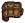
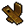
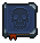

Butcher's Kit
Butcher's Kit is a tool that grants +1.
Obtaining
| Blueprint | Result | Materials | Mastery | Technology |
|---|---|---|---|---|
Jewelry Table |
1x  Butcher's Kit |
2x  Bronze Detail1x Leather Scroll |
 Skin and Bones | |
| Ticks: 8 Energy / tick: 3 Points / craft: 3 | ||||
Study and alchemy
| Requires | Points | Runes |
|---|---|---|
| 5x |
20 |